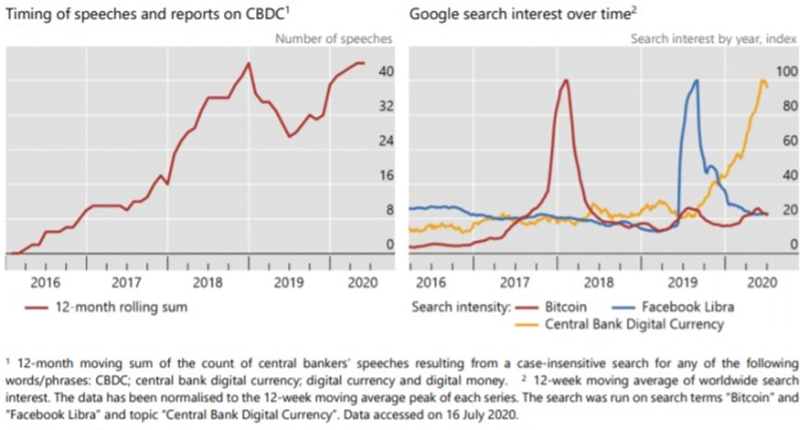

12 months ago, Central Bank Digital Currencies (CBDCs) were the topic of think tanks and obscure magazines. These days, not a month goes by without a new headline in the more popular press – as the graphs below from a recent report from the Bank for International Settlements (BIS) show.

According to an earlier report from the BIS, 80% percent of the world’s central banks are working on launching their own digital currency. In addition, 10% of central banks had developed pilot projects, and banks that collectively represent 20% of the world's population said they were likely to issue them in the next few years. Ecuador, Ukraine, and Uruguay have recently completed pilots of retail CBDCs. It’s a focus for the People’s Bank of China, with the recent announcement of a pilot in Guangdong-Hong Kong-Macao Greater Bay Area, Beijing-Tianjin-Hebei region, and Yangtze River Delta region. It was also reported that it will also be tested during the 2022 Winter Olympics games in Beijing.
A Dutch fintech-focused think tank dGen, in its recent report - “CBDCs: Geopolitical Ramifications of a Major Digital Currency” - predicts that three to five nations globally will completely replace their national currency with a CBDC in ten years. The report outlines significant progress in CBDC by jurisdictions like the Bahamas and Sweden noting that Sweden’s e-krona development comes in line with the country’s plan to go cash-free by 2025.
dGen also forecasts that the euro will be overtaken by China’s digital yuan project if Europe does not develop its own CBDC by 2025. It stressed the need for the ECB to establish a “suitable environment for the prosperity of the digital euro,” noting that otherwise the fiat1 currency is at risk of losing its position in the global economy.
The ECB has been looking at CBDCs and Yves Mersch discussed them in his speech in May 2020 – highlighting a number of legal and technical challenges that lay ahead. At the beginning of September, President Lagarde announced that further findings and comments would be issued soon.
So, what are Central Bank Digital Currencies (CBDCs) and what do they mean for a treasurer?
There is no common definition of a CBDC as the term refers to a range of possible designs and policy choices and combines several areas including computer science, cryptography, payments systems, banking, monetary policy and financial stability. What they generally have in common is they are digital currencies issued by central banks that function as national currencies (fiat). They are a direct replacement for paper money, with the exact same value and issuance policies. CBDCs are state-sanctioned and governed by the monetary authority and regulatory law.
The Bank of England has offered the following description of electronic central bank money, that it:
In its report in April 2020, the Banque de France refers to it as a digital asset that only the central bank may issue or destroy, that is traded at par against banknotes and reserves, that is available 24/7, that may be used in peer-to-peer transactions and that circulates on digital media that are at least partially different from existing media.
One definition refers to it as a digital asset issued by a central bank for the purpose of payment and settlement, in either retail or wholesale transactions. A ‘retail’ CBDC would be used like a digital extension of cash by all people and companies, whereas a ‘wholesale’ CBDC could only be used by permitted institutions as a settlement asset in the interbank market.
Treasurers will be familiar with electronic money in the wholesale world as they process payments to suppliers, employees and from customers. The main area of innovation would be for the retail market.
A retail CBDC would be a new form of central bank money, issued and controlled by the central bank with supply determined by monetary policy. Currently, citizens can only hold money issued by a central bank in the form of banknotes whereas commercial banks can hold electronic central bank money. Unlike physical banknotes, these CBDC banknotes would be electronic and be available to households and businesses, allowing them to make payments directly and store value using an electronic form of central bank money. They would need to be distributed at one-to-one parity with relevant fiat by the central bank and be seamlessly and freely convertible against commercial bank money and cash.
CBDCs would be a liability to the central bank balance sheet (as opposed to commercial bank money which is a claim against a commercial bank), and citizens would not need a bank account to obtain and use a CBDC. It is expected that the cost of transaction would be lower than current systems.
A key decision for any central bank is whether to adopt a token- or account-based form.
Token: Digital currency units are linked to a physical medium, which may be dedicated (e.g. mobile phone, hard drive or payment card), and which characterises ownership. Functionally this is similar to cash as only the holder of the physical medium can pay using units stored on the medium. Procedures for exchanging digital currency depend on the nature of the medium, but the transfer of units has to happen electronically from medium to medium.
Account-based: Digital currency units are stored in an account linked to the holder and accessible online. Payments are made from account to account and the issuer and the beneficiary must have an account denominated in the digital currency. Accounts could be held either directly by the central bank or with financial intermediaries.
Central banks have been looking into CBDCs to achieve some of the following:
Various banks in Europe have been looking at CBDCs. This includes the ECB and the Dutch, Swedish and French central banks.
The Banque de France has already selected 8 partners to participate in experimental trials for a digital euro. These firms will explore three areas:
Interestingly, the Banque de France has specifically excluded research on crypto-assets.
In the Netherlands, the DNB has been focusing on the use of smart contracts in its report from April noting that a smart contract system with complex logic potentially increases the demand for CBDC and offers opportunities to reduce transaction costs.
Sweden has launched a one-year pilot of a CBDC for the country. The aim is to test the viability of a blockchain-based, centrally-issued national currency to replace its existing payments networks.
At the moment CBDCs remain more of a concept than a reality. However, trials are underway in a number of countries as central banks look at their benefits and implications – for citizens, governments, and businesses.
Treasurers therefore need to become familiar with at least the basic concepts in order to follow the developments (which will gather pace).
There is no guarantee that we will see CBDCs become as ubiquitous as physical money and there remain a number of challenges to unlocking their value. Key challenges include:
As such, despite the work being done, the rollout of a CBDC in one country remains many years in the future. However, for those interested, it is a great opportunity to participate in the various consultations and Proofs of Concepts going on across the world.
The Policy and Technical team at the Association of Corporate Treasurers has direct and indirect links to many of the major central banks and anyone interested in getting more involved in the debate on CBDCs should contact technical@treasurers.org.
Naresh Aggarwal
Associate Director, Policy & Technical
The Association of Corporate Treasurers
1 Fiat money is a currency that lacks intrinsic value and is established as legal tender by government regulation
.png "The LEI: Unlocking the Benefits of a Secure Payments Ecosystem for Corporate Treasurers")
The EACT has been advocating for a digital identity for Corporates for many years now. We believe that, Corporates, like individuals, must have a single identity which help them to identify itself and identify third parties as well in this digital era.
Read.png "LkSG Relevant for Treasury on a Case-by-case Basis")
The Supply Chain Due Diligence Act (LkSG) creates the legal framework to improve the protection of the environment and human rights along German supply chains. GACT spoke to Dr. Julia Sitter (White & Case LLP) about the relevance and need for action by treasury departments.
Read.png "CMU, The Come-Back!")
The Capital Market Union, which was one of the main objectives of the Vander Leyen Commission, is back in the limelight, and is likely to become a priority for the next Commission next summer.
Read.png "What Will be the Corporate Treasurer's Priorities for 2024?")
General insights into the common priorities of corporate treasurers that will still be relevant in 2024.
Read.png "Counterparty Risk Assessment by Treasurers")
François Masquelier lists some comprehensive steps to best assess counterparty risks.
Read